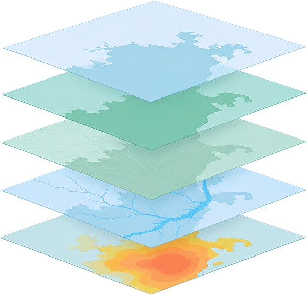
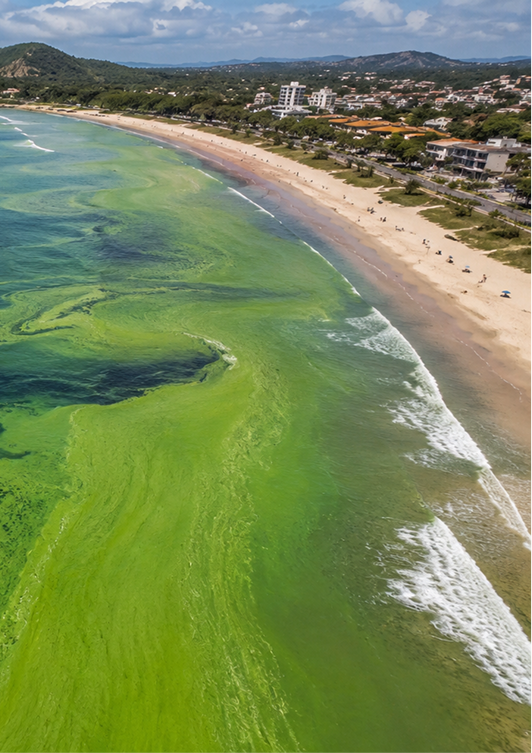
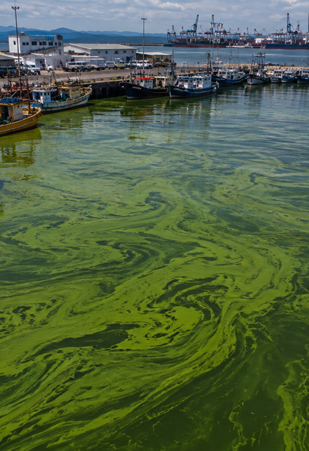
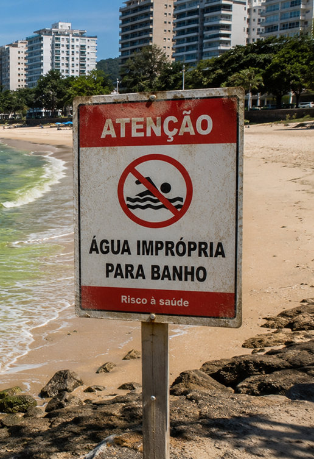

Projeto Algamar 2026
Conheça a Algamar.
Software de previsibilidade
de algas tóxicas.
Acessar Software
Algamar
Uma nova forma de
observar o litoral.
Nosso objetivo é transformar dados ambientais em informações útil para antecipar eventos de floração e apoiar decisões importantes para o litoral de São Paulo.
Saiba como funciona-
Dados de temperatura, chuva, vento e radiação solar serão cruzados com registros de ocorrências para identificar padrões e possíveis condições de risco para florações de algas tóxicas no litoral paulista.
-
Dados oceanográficos, como correntes, temperatura e salinidade, serão analisados para compreender as condições do mar e sua relação com a formação e dispersão das algas.
-
Informações sobre nutrientes, turbidez, oxigênio e outros indicadores serão utilizadas para avaliar a qualidade da água e identificar condições favoráveis à proliferação de algas.
-
O sistema combinará dados ambientais e históricos para identificar padrões e estimar a possibilidade de ocorrência de florações de algas tóxicas.
-
A partir dos dados analisados, o sistema indicará áreas com diferentes níveis de risco, auxiliando no monitoramento e na identificação antecipada de possíveis florações.

O problema
Por que nos preocupar ?
As florações de alga podem alterar o equilíbrio dos ambientes aquáticos, afetar atividades económicas e, em alguns casos, estar associadas á produção de toxinas que representam riscos á saúde humana e animal.


Impactos econômicos
As florações de algas tóxicas podem causar prejuízos à pesca, ao turismo e à aquicultura. A morte de peixes e a contaminação da água reduzem a atividade pesqueira, enquanto praias interditadas podem afastar turistas e prejudicar negócios locais.
Ler mais
A pesquisa
Testamos se dava para prever.
Dava.
O estudo piloto que originou a ALGAMAR comparou o risco calculado pelo modelo com as florações efetivamente registradas no litoral paulista, ao longo de um ciclo sazonal completo.
Desenho do estudo
Titulo
Previsão de curto prazo de florações de algas nocivas por integração de dados orbitais e oceanográficos no litoral de São Paulo
Área
Litoral Norte, Baixada Santista e Complexo estuarino de Iguape-Cananéia
Periodo
12 meses de campo · 8 anos de série histórica para treino
Dados
Clorofila-a e temperatura de superfície diárias, cruzadas com registros de ocorrência e balneabilidade
Método
Modelo de classificação treinado na série histórica, com projeção de transporte por correntes costeiras
Validação
Comparação semanal entre risco previsto e floração observada
Risco previsto × floração observada · 24 semanas
0%
Acerto na detecção
0,0
Dias de antecedência
0%
Falsos negativos
Resultado de simulação. Os números e o gráfico ilustram o desenho da pesquisa e devem ser trocados pelos dados reais quando o estudo de campo terminar.
Sobre nós
Quem está por trás do Algamar.
Somos um grupo de estudantes de Análise e Desenvolvimento de Sistemas, e este software foi desenvolvido como parte de um projeto universitário. A iniciativa surgiu a partir de uma proposta do professor, que nos incentivou a desenvolver um projeto inovador, fora do cotidiano acadêmico, explorando a criação de um software com caráter preditivo e aplicação prática.
Tulio Medeiros
Frontend Developer & UX/UI Designer
UX, fluxos de navegação e prototipação, Desenvolvimento do frontend e interfaces
Gabriela Hipólito
Pesquisadora / Documentação
Documentação técnica, científica e institucional, Artigo científico e relatórios
Igor Henrique
Software Architects, Machine Learning
Arquitetura, infraestrutura, implantação e versões, Mecanismo preditivo e Machine Learning
João Victor
Backend Developer / Data Analyst
Coleta, tratamento e análise de dados, Banco de dados e governança, Backend, serviços, APIs e integrações
João Francisco
Software Architects, Machine Learning
Arquitetura, infraestrutura, implantação e versões, Mecanismo preditivo e Machine Learning
Tailaine Pereira
QA & Security Analyst / Product Analyst
Levantamento e validação de requisitos, Testes, segurança e qualidade
Joicy Nunes
Gestão de Projetos / Pesquisadora
Gestão, planejamento, acompanhamento e integração Levantamento bibliográfico e fundamentação teórica